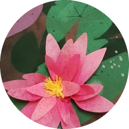
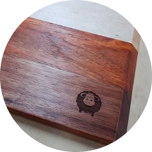

Technology and Applied Studies Teacher
Food Technology and Textiles Technology Specialist
About Me
Hello! I’m Naomi Lam, a third year pre-service teacher of Technology and Applied Studies (TAS) at ACU in Sydney, Australia.
Why do I think TAS is the best subject to teach?
Not only do students love getting hands on experience in a range of different technologies, they get to solve real world problems, which gives them authentic learning experiences.
Experience in Food Product Development, Nutrition, Hospitality, Australian Agriculture, Indigenous Food and Molecular Gastronomy

Textiles Projects
Experience in E-textiles, Textile Dyes, Quilting, Screen printing, Garment making and Leatherwork

Materials Projects
Experience in Prototyping, 3D printing, Fusion360 CAD design, Timber design and Metalwork design
Spill the TEA from the Technology Educators Association on more amazing TAS projects
Experience
I have been many things so far: chef, conference coordinator, film student, methadone clinic worker,
bookstore manager, world traveller, receptionist, toasted sandwich champion,
aged care administrator, cinema event manager, caterer, book club convenor,
ethics teacher, and best of all, now a TAS teacher
5 Years Qualified Chef
5 Years Event Manager
6.09 Grade Point Average
2021 Golden Key Society Member
2022 O'Malley Scholarship Recipient
I became a TAS Teacher because I am passionate about teaching students how to cook delicious, nutritious food. I want to show them the easiest way to peel an onion, the best way to poach an egg, and get them to experience the vast array of fabulous produce we have in Australia. I am excited about designing and making projects with students that explore digital technologies, timber technologies, agriculture, engineering, and wonderful textile technologies. Teaching TAS is so rewarding as we are supporting, nurturing and educating young people who will one day make designs that change the world. While at ACU I have received a commendation for achieving a 6.09 grade point average, and received an invitation to join the Golden Key Honour Society for achieving in the top 10% of students. I am so fortunate to have won the King & Amy O’Malley Trust Scholarship which supports high achieving Food Technology and Textiles Technology undergraduate teachers.
Teaching Philosophy
The TAS Teaching discipline is founded on the basis of the Design Process.
TAS uses the Design Process in Project Based Learning to explore real world problems that students can design solutions to using the technologies they are learning about.
What is the Design Process?
Textbooks say the Design Process looks like this:
When in reality, the Design Process is more like this:
I know from experiencing the Design Process myself that the struggle is real!
But when you finish those projects it's so rewarding.
In TAS I believe that students need hands on experience in designing and crafting their own projects. They need space to explore, experiment and to fail. We end up learning so much more from our failures than we do our successes. I want to encourage the curiosity of my students and expand their understanding of the world around them.
My teaching philosophy is grounded in an ethical, empathetic approach that recognises the diversity of students, accommodates their different learning styles, and connects to them as individuals.
Philosophy of Education
I love John Dewey’s approach to learning and it forms the basis of my teaching philosophy.
John Dewey’s philosophy of education was developed over 100 years ago, but it is still so relevant today.
Watch this quick video from Sprouts explaining his 4 principles of education.